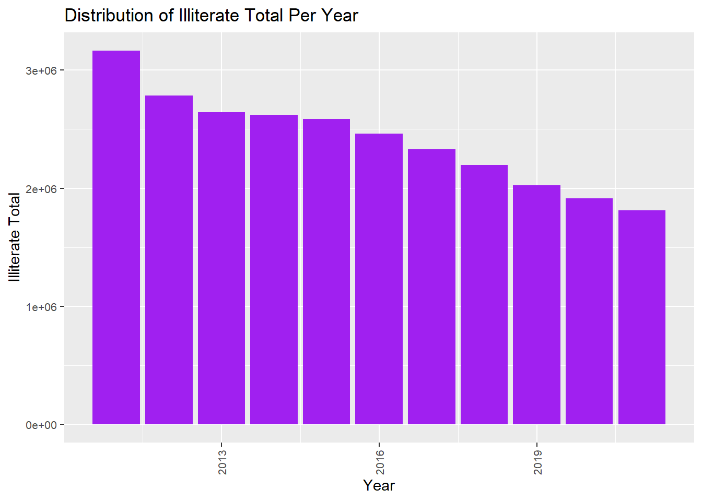

Project Distribution of education levels by provinces and gender in Turkey over the years
Welcome to my project page.
Keep an eye on this space to stay updated with my project activities.
(The titles below are provided as examples; please feel free to adjust them as necessary.)
1. Project Overview and Scope
# In this study, the Completed education by province (15+ years old) data set made available by TUIK will be used. It contains data on gender distribution of education levels by province in Turkey between 2011 and 2021.
# With the 2020 Data set of Convicts Entered into Penal Institutions by Crime Type and Educational Level, crime situations in the provinces will be examined according to education levels in 2020.
Below you can find the names of all columns in the Education and Crime datasets and information about the data they represent.
#Year : The Year where data is collected for statistical calculations. #ProvinceID : The ProvinceID where data is collected for statistical calculations. #ProvinceName : The ProvinceName where data is collected for statistical calculations. #illiterateTotal : The illiterateTotal where Total number of illiterate people in Turkey. #illiterateMale : The IlliterateMale where Total number of illiterate men in Turkey. #illiterateFemale : The IlliterateFemale where Total number of illiterate women in Turkey. #LiterateWithoutADiplomaTotal :The LiterateWithoutADiplomaTotal is total number of people in Turkey which has no diploma. #LiterateWithoutADiplomaMale :The LiterateWithoutADiplomaTotal is total number of men in Turkey which has no diploma. #LiterateWithoutADiplomaFemale :The LiterateWithoutADiplomaTotal is total number of women in Turkey which has no diploma. #PrimarySchoolTotal : The PrimarySchoolTotal is number of people which graduated from Primary school in Turkey. #PrimarySchoolMale : The PrimarySchoolMale is number of men which graduated from Primary school in Turkey. #PrimarySchoolFemale : The PrimarySchoolMale is number of women which graduated from Primary school in Turkey. #PrimaryEducationTotal : The PrimaryEducationTotal is number of people which graduated from Primary Education in Turkey. #PrimaryEducationMale : The PrimaryEducationMale is number of men which graduated from Primary Education in Turkey. #PrimaryEducationFemale : The PrimaryEducationFemale is number of women which graduated from Primary Education in Turkey. #LowerSecondarySchoolTotal : The LowerSecondarySchoolTotal is number of people which graduated from Lower Secondary School in Turkey. #LowerSecondarySchoolMale :The LowerSecondarySchoolMale is number of men which graduated from Lower Secondary School in Turkey. #LowerSecondarySchoolFemale :The LowerSecondarySchoolFemale is number of women which graduated from Lower Secondary School in Turkey. #UpperSecondarySchoolTotal :The UpperSecondarySchoolTotal is number of people which graduated from Upper Secondary School in Turkey. #UpperSecondarySchoolMale :The LowerSecondarySchoolMale is number of men which graduated from Upper Secondary School in Turkey. #UpperSecondarySchoolFemale :The LowerSecondarySchoolFemale is number of women which graduated from Upper Secondary School in Turkey. #HigherEducationalinstitutionsTotal :The HigherEducationalinstitutionsTotal is number of people which graduated from Higher Educational institutions in Turkey. #HigherEducationalinstitutionsMale :The HigherEducationalinstitutionsMale is number of men which graduated from Higher Educational institutions in Turkey. #HigherEducationalinstitutionsFemale :The HigherEducationalinstitutionsFemale is number of women which graduated from Higher Educational institutions in Turkey. #MasterTotal :The MasterTotal is number of people which graduated from Master in Turkey. #MasterMale : The MasterTotal is number of men which graduated from Master in Turkey. #MasterFemale : The MasterTotal is number of women which graduated from Master in Turkey. DoctorateTotal : The DoctorateTotal is number of people which graduated from Master in Turkey. DoctorateMale :The DoctorateTotal is number of men which graduated from Master in Turkey. DoctorateFemale :The DoctorateTotal is number of women which graduated from Master in Turkey. UnknownTotal : The UnknownTotal is the number of people whose educational status is unknown in Turkey. UnknownMale :The UnknownTotal is the number of men whose educational status is unknown in Turkey. UnknownFemale :The UnknownTotal is the number of women whose educational status is unknown in Turkey.
2.3 Reason of Choice
The change in education level by province in Turkey over the years is an interesting data set. Comments can be made on how the relevant data has changed and developed over the years. For this reason, I wanted to examine in detail the changes in Turkey’s literacy rates and postgraduate education rates according to provinces and years.
Additionally, we will use a second data set to examine the relationship between education levels and crime rates. This data set provides us with crimes and crime rates according to education levels in 2020.
3. Analysis
We will have many summary data thanks to the data set that will enable us to analyze education levels in Turkey. And we will observe the relationships between them and crime data.
3.1 Exploratory Data Analysis
Below you see the graph of the total number of illiterate people in Turkey according to years. From the graph, it can be observed that the number of illiterate people in Turkey has decreased over the years. Stay tuned for many more summary data like this and analysis of the relationships between data.
Code
suppressPackageStartupMessages(library(dplyr))library(readxl)library(dplyr)library(tidyr)library(ggplot2)education <-read_excel("C:/Users/w10/Documents/GitHub/emu660-spring2024-ecemsenaunlu/data/education.xls")education2 <- education %>%group_by(Year) %>%summarise(illiterateYearTotal =sum(illiterateTotal))education2 %>%ggplot(aes(x = Year, y = illiterateYearTotal)) +geom_bar(stat ="identity", fill ="purple") +labs(title ="Distribution of Illiterate Total Per Year",x ="Year",y ="Illiterate Total") +theme(axis.text.x =element_text(size =8, angle =90, vjust =0.5, hjust =1),axis.text.y =element_text(size =8))

Code
suppressPackageStartupMessages(library(dplyr))library(readxl)library(dplyr)library(tidyr)library(ggplot2)education <-read_excel("C:/Users/w10/Documents/GitHub/emu660-spring2024-ecemsenaunlu/data/education.xls")education2 <- education %>%group_by(Year) %>%summarise(illiterateYearTotal =sum(illiterateTotal))education2 %>%ggplot(aes(x = Year, y = illiterateYearTotal)) +geom_bar(stat ="identity", fill ="purple") +labs(title ="Distribution of Illiterate Total Per Year",x ="Year",y ="Illiterate Total") +theme(axis.text.x =element_text(size =8, angle =90, vjust =0.5, hjust =1),axis.text.y =element_text(size =8))